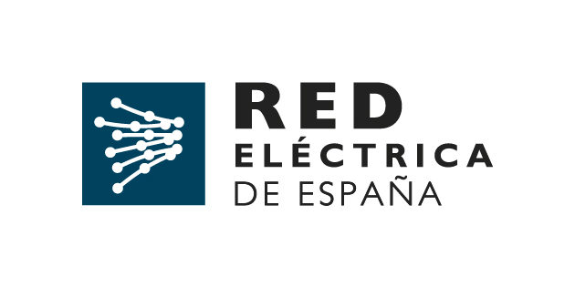
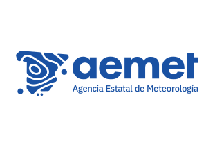
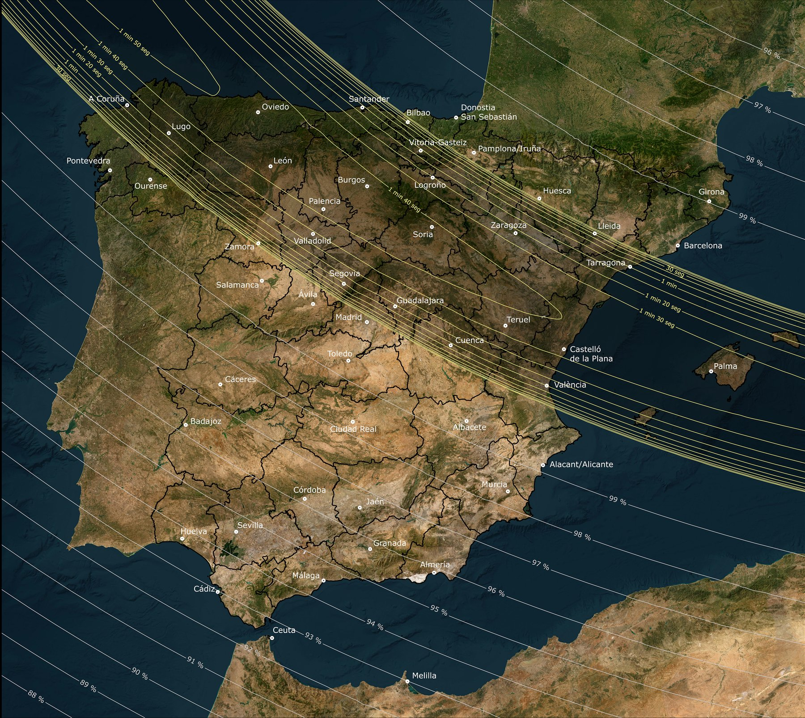
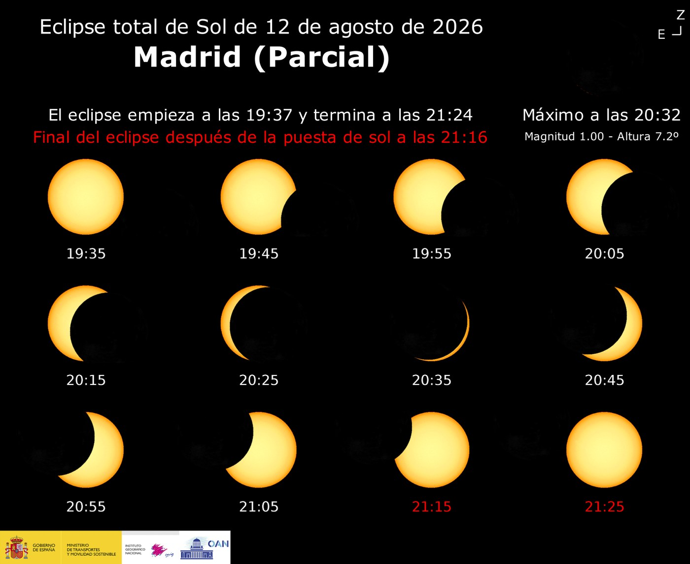

Cómo leer esta página
Cinco fuentes públicas independientes, coloreadas de forma consistente en todo el panel.

⚡ REE (Red Eléctrica de España)Generación solar fotovoltaica en tiempo real, España peninsular. Debería caer durante la totalidad.
🌡️ AEMET (Agencia Estatal de Meteorología)Temperatura en 10 estaciones a lo largo del camino de totalidad.🔍 Google Trends (herramienta pública de Google)Interés de búsqueda del término «eclipse» en España, estimado.
Camino de totalidad
Brillo del cielo a lo largo del camino, más generación solar peninsular.

Mapa y tiempos de referencia
Mapa oficial de la banda de totalidad, y un ejemplo de cómo progresan las fases parciales (Madrid) — como contexto junto a la vista en vivo de arriba.
Instituto Geográfico Nacional — astronomia.ign.es

Instituto Geográfico Nacional — astronomia.ign.es
Fuente: Instituto Geográfico Nacional (IGN), Observatorio Astronómico Nacional — Ministerio de Transportes y Movilidad Sostenible. Imágenes originales: astronomia.ign.es/eclipses-de-sol-y-luna/eclipse-total-sol-de-12-de-agosto-2026.
Antes, durante y después
La comparación clave del proyecto: un patrón de brillo y generación solar que no se repite en el mismo lugar durante décadas. Esta tarjeta ignora el filtro de «Ventana temporal» de arriba a propósito, para mostrar siempre las cuatro fases lado a lado.
Horario oficial (IGN, España peninsular): Antes — antes de las 19:30h (17:30 UTC), inicio de la fase parcial. Parcial — fases parciales antes y después de la totalidad, hasta ≈21:25h (19:25 UTC) según la referencia de Madrid del IGN. Totalidad — 20:27–20:35h (18:27–18:35 UTC), duración real 1–1,7 min según el punto del camino. Después — tras el último contacto parcial. Captura — el 12 de agosto las fuentes principales (solar, tráfico, cámaras, snapshot público) solo capturan 19:20–21:30h (17:20–19:30 UTC), desde 10 min antes del primer contacto hasta el final de la ventana; no hay datos de estas fuentes antes de las 19:20h. El simulacro del 11 de agosto conservó el diseño original de dos cadencias (18:30–21:30h continuo, más refuerzo 20:15–20:45h en la totalidad).
Promedio de datos en cada fase — por fuente, media de las lecturas de cada fase (recuento de incidencias para DGT Tráfico)
Todas las fuentes en el tiempo
Las cinco fuentes en una sola visualización, gobernada por los filtros de «Ventana temporal» y «Ciudad» de arriba, más la ventana reciente de abajo (independiente, solo afecta a este gráfico). Cada serie está normalizada a una escala relativa 0–100 dentro de la ventana visible para comparar su forma en el mismo eje temporal; los valores reales están en la leyenda y al pasar el cursor.
Por ciudad
Temperatura y brillo de cámara, última lectura
NAP-DGT · por provincia
Incidencias en esta selección
—